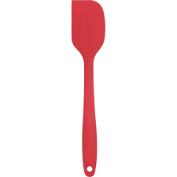
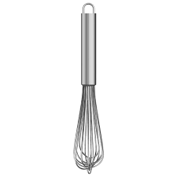
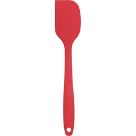
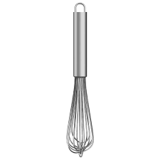
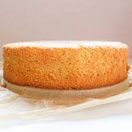
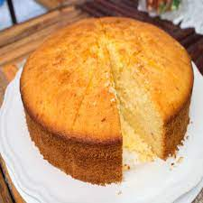
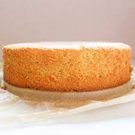
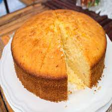

- Room Temperature Is Key
Make sure your butter, eggs, and milk are at room temperature. This helps them blend more evenly, creating a smoother batter and fluffier cake.
- Weigh Your Ingredients
Use a kitchen scale for accuracy — especially for flour and sugar. Too much flour can make your cake dense, while too little sugar can affect texture and browning.
- Sift for Softness
Sift your flour, baking powder, and salt together. This aerates the dry ingredients and helps prevent lumps, giving your cake a finer crumb.
- Cream Butter and Sugar Well
Beat the butter and sugar until light and fluffy — this step traps air and gives your cake a beautiful rise.
- Do not Overmix
Once you add the flour, mix just until combined. Overmixing can lead to a tough cake.
- Tap the Pan
After pouring the batter into the pan, gently tap it on the counter to release any air bubbles for an even bake.
- Preheat Your Oven
Always preheat your oven fully before baking. An accurate temperature ensures your cake rises properly and bakes evenly.
- Do not Peek Too Soon
Avoid opening the oven door in the first 20 minutes — sudden temperature drops can cause your cake to sink.
- Cool Before Frosting
Let your cake cool completely before frosting to avoid melting or sliding layers.


 





 


